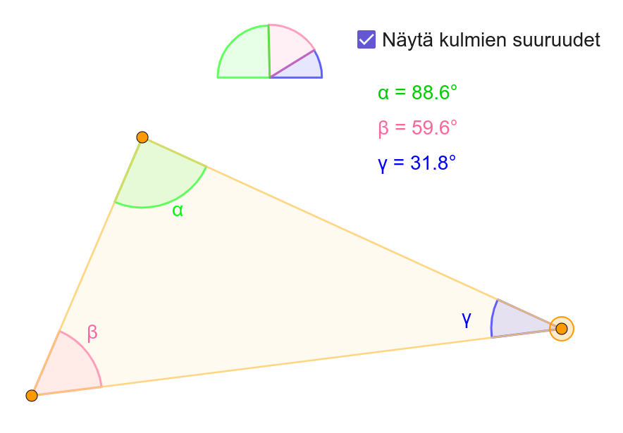

Opetusvideo
Videolla "Kolmion kulmien summa" käydään läpi geometrinen todistus sille, että kolmion kulmien summa on 180°. Video on suunnattu lukiolaisille ja yläkoululaisille, ja se on tehty lukion MAA3 Geometria -kurssille sopivaksi materiaaliksi. Videota voi käyttää opetustilanteessa tai itseopiskelussa.
Video pyrkii olemaan selkeä, helposti ymmärrettävä ja saavutettava. Selkeyttä luovat kuvat, värien käyttö ja yhtäaikainen puhuttu selitys. Saavutettavuutta parantaa videoon saatavilla oleva tekstitys. Videon on tarkoitus olla nuorelle mielekästä katsottavaa ja siihen onkin yritetty valita moderneja, tyylikkäitä värejä.
Katso video YouTubessaTämä projekti on ollut erittäin antoisa, ja opetusvideoiden tekeminen on minulle mielekästä. Aloittelenkin juuri YouTube-kanavaprojektini, jonka parissa aion työskennellä tänä vuonna enemmänkin. Tarkoituksenani on tarjota nuorille matematiikkasisältöinen kanava, josta löytyy selkeitä ja tyylikkäitä opetusvideoita ilmaiseksi. Alustana YouTube tavoittaa yläkoululaiset ja lukiolaiset. Ihmisten keskittymiskyky on yleisesti heikentynyt, ja voin olla edistämässä nuorten oppimista tekemällä videoista tarpeeksi lyhyitä, selkeitä ja visuaalisesti kiinnostavia. Tässä esitelty video on ensimmäinen tekemäni opetusvideo tuosta projektista.
Projektissa käytin Xournal++ -ohjelmaa matematiikan piirtämiseen ja selittämiseen sekä Capcutia videoiden editointiin.
Lyhytvideo
Tämän julkaisun idea on tavoittaa nuoria ja herättää kiinnostusta matematiikkaan. Samalla näinkin lyhyellä videolla on myös opetuksellista arvoa, kun siinä käydään läpi yhtälönratkaisua. Video on lyhyt ja nopeatempoinen, koska tarkoituksena on saada nuori katsomaan video kokonaan. Video on tekstitetty, ja siksi sen voi katsoa kokonaan myös äänittä. Lyhytvideoiden avulla matematiikka voi tavoittaa nuoria arjessa. Videon voi julkaista YouTube short -videona tai TikTokissa.
Matematiikan kirjoittaminen on tehty ohjelmalla Xournal++ ja video on editoitu Capcutilla.
GeoGebra-appletti
Toteutin GeoGebralla interaktiivisen mallin, joka havainnollistaa kolmion kulmien summaa. Käyttäjä voi itse muuttaa kolmion muotoa ja nähdä samanaikaisesti muutoksen seuraukset. Appletti tukee aktiivista tutkimista ja oppimista. Appletti on julkaistu GeoGebrassa ja sen voi löytää kohdasta "Materiaalit" hakusanoilla "kolmion kulmien summa" tai "sini järveläinen". Pääset applettiin myös suoraan oheisesta linkistä.
Siirry applettiin GeoGebrassa Tämä projekti on tehty kokonaan GeoGebralla.

Kandidaatintutkielma
Tutkielmani on kirjallisuuskatsaus konvekseihin funktioihin. Tutkielma on kirjoitettu siten, että se voi toimia oppimateriaalina yliopisto-opiskelijalle. Kirjoitin kandidaatintyöni keväällä 2024, ja se sai arvostelussa arvosanan 5 asteikolla 1—5. Oheinen linkki avaa tutkielman pdf-tiedostona uuteen välilehteen.
Avaa PDF-tiedosto
Tämä työ on laadittu LaTeX-ladontajärjestelmällä.
Verkkoportfolio
Näitä verkkosivuja tehdessä on kulunut monta kuppia kahvia ja olen hyödyntänyt intohimoani tekemiseen.
☕ 🧡
Toteutuksessa käytin HTML:ää ja CSS:ää, ja työskentelin Linux-ympäristössä.